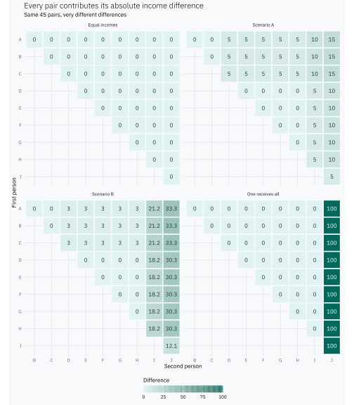
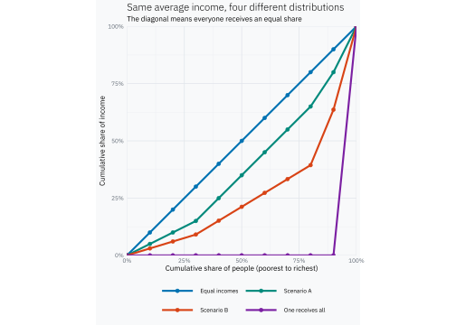

What does the Gini coefficient of income inequality measure?
Understanding what the Gini coefficient measures and how to interpret income inequality.
R
economics
statistics
minipost
Author
Joshua Kunst
Published
October 15, 2026
The Gini coefficient is often introduced with the Lorenz curve, or simply as a number between 0 and 1. But what is it actually measuring?
Let’s start with ten people and four ways of sharing the same total income.
Ten people, four scenarios
Every scenario has ten people, total income 100 and average income 10. Only the distribution changes: everyone earns the same amount, Scenario A has modest differences, Scenario B concentrates more income at the top, and in the last scenario one person receives everything.
The decimals in Scenario B come from rescaling its incomes to the common total. The calculations use the full values; only the table is rounded.
Compare every pair
With ten people, there are
\[
\binom{10}{2}=\frac{10\times9}{2}=45
\]
unique pairs. For each pair, take the absolute difference between their incomes. Equal incomes contribute zero; a larger gap contributes more.
income_long<-incomes|>pivot_longer(-person, names_to ="scenario", values_to ="income")|>mutate(scenario =factor(scenario, levels =names(scenario_names), labels =unname(scenario_names)))# Compare people within each scenario; keep only one direction of every pair.pairs<-income_long|>rename(person_i =person, income_i =income)|>inner_join(income_long|>rename(person_j =person, income_j =income), by ="scenario", relationship ="many-to-many")|>filter(person_i<person_j)|>mutate(difference =abs(income_i-income_j))
We can see all 45 comparisons in each scenario. Each cell contains the income difference for one pair; the blank half contains the comparisons we deliberately avoid counting twice.
pairs|>mutate( person_i =factor(person_i, levels =rev(LETTERS[1:10])), person_j =factor(person_j, levels =LETTERS[1:10]))|>ggplot(aes(person_j, person_i))+geom_tile(aes(fill =difference), colour ="#F8F9FA", linewidth =0.7)+geom_text(aes(label =round(difference, 1), colour =difference>=60), size =2.8, show.legend =FALSE)+scale_fill_gradient(low ="#E0F2F1", high ="#00695C")+# Use a compact vector gradient that remains clear in SVG output.guides(fill =guide_colourbar( direction ="horizontal", display ="rectangles", nbin =128, theme =theme( legend.key.width =grid::unit(4, "cm"), legend.key.height =grid::unit(0.35, "cm"), legend.title.position ="top")))+scale_colour_manual(values =c("FALSE"="#263238", "TRUE"="#FFFFFF"))+# Two rows keep the pair labels legible across all four scenarios.facet_wrap(~scenario, ncol =2)+coord_equal()+labs( title ="Every pair contributes its absolute income difference", subtitle ="Same 45 pairs, very different differences", x ="Second person", y ="First person", fill ="Difference")+theme(panel.grid =element_blank())

For example, Scenario A has three people earning 5 and five earning 10. That is \(3\times5=15\) pairs, each contributing a difference of 5, or 75 in total. Pairs of people with equal incomes add zero.
In the equal-income scenario all 45 gaps are zero. When one person receives everything, only their nine pairs with the other people contribute: \(9\times100=900\). The other 36 pairs compare two zero incomes.
Now let’s add up those differences, then divide by population size times income total.
Here \(y_i\) is person \(i\)’s income, \(n\) is the number of people, and \(\bar y\) is the average income, assumed positive. The average difference is taken over all \(n^2\) ordered pairs, including comparisons of a person with themselves. Each distinct pair appears twice, which explains the factor of 2 compared with the earlier formula using \(i<j\). In particular, multiplying every income by 10 leaves each scenario’s Gini unchanged.
The same result on a Lorenz curve
Only now do we need a curve. Sort people by income, then accumulate their share of the population and their share of total income.
lorenz_plot<-ggplot(lorenz,aes(population_share, income_share, colour =scenario))+geom_abline(slope =1, intercept =0, colour ="#9E9E9E", linetype =2)+geom_line(linewidth =1)+geom_point(size =1.7)+scale_colour_manual(values =scenario_colours)+# Two rows prevent the four scenario labels from overflowing the square plot.guides(colour =guide_legend(nrow =2, byrow =TRUE))+scale_x_continuous(labels =scales::label_percent())+scale_y_continuous(labels =scales::label_percent())+coord_equal(xlim =c(0, 1), ylim =c(0, 1), expand =FALSE)+labs( title ="Same average income, four different distributions", subtitle ="The diagonal means everyone receives an equal share", x ="Cumulative share of people (poorest to richest)", y ="Cumulative share of income", colour =NULL)lorenz_plot

Equal incomes trace the diagonal. Scenario B bows farther below it than A. When one person receives everything, the poorest 90% receive no income: the curve stays at zero until it rises over the last tenth of the population. The familiar area formula is
\[
G=1-2\times\text{area under the Lorenz curve}.
\]
With ten people and this definition, 0.9 is the largest possible Gini. More generally, the maximum is \((n-1)/n\), which approaches 1 as the population grows.
The Gini coefficient is not just an area between two curves. It begins with something concrete: the income differences between pairs of people.
With the same mean and population, larger total pairwise gaps mean a higher Gini.
Dividing by population size and total income makes the comparison relative.
The same inequality appears geometrically as the gap between the Lorenz curve and the equality diagonal.
Our four scenarios range from 0 to 0.9, with A and B in between. Their average incomes are identical; what Gini captures is how differently those incomes are shared.
Explore income inequality
How does the Gini coefficient change when incomes are distributed differently? Explore different scenarios and see how changes in individual incomes affect inequality, even when the average income stays the same.